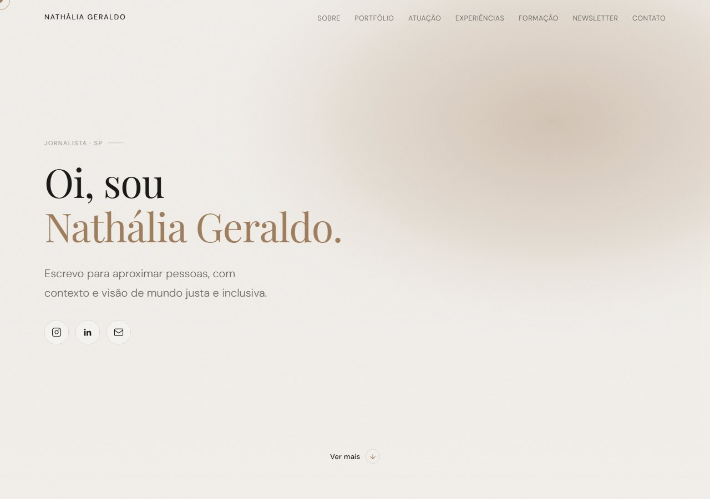
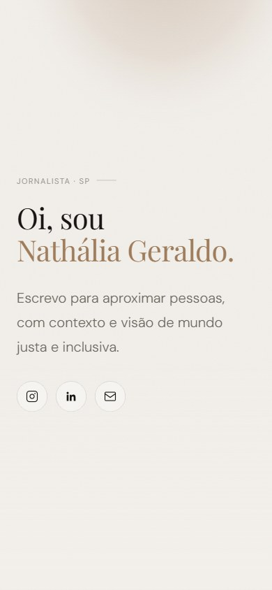
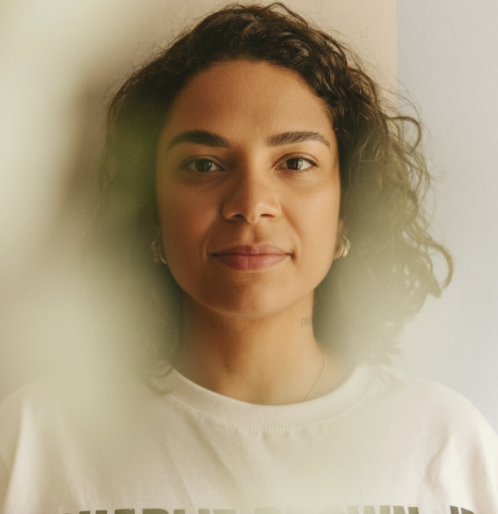
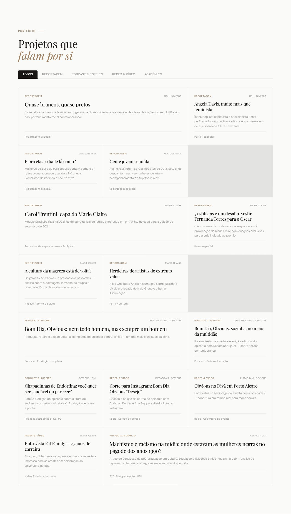

Portfólio editorial · Site no ar
Nathália Geraldo
Portfólio para uma jornalista com 15 anos de carreira, organizado em torno da própria assinatura editorial dela.
- Papel
- Design e implementação, ponta a ponta
- Ferramentas
- Figma, HTML, CSS e JavaScript puros
- Foco
- Editorial, performance e SEO
- Status
- No ar


Contexto
A Nathália é jornalista e editora com 15 anos de carreira. Passou por veículos como UOL Universa e Marie Claire, foi coordenadora de podcasts na Obvious e tem uma trajetória forte em pautas sociais, culturais e de direitos das mulheres. O desafio não era falta de conteúdo: era o oposto. Reportagens especiais, perfis, roteiros de podcast, cortes para redes sociais, um artigo acadêmico de pós-graduação. Um portfólio extenso e de naturezas bem diferentes, que precisava caber num site só sem virar um currículo denso ou uma lista cansativa de links.
O site também precisava sustentar duas coisas ao mesmo tempo: a autoridade profissional dela (formação, trajetória em veículos reconhecidos, competências) e a experiência de navegar pelo trabalho publicado, para quem chega ali como RH avaliando currículo, como marca buscando uma redatora ou como leitor curioso sobre uma matéria específica.

Direção de design
O princípio que guiou todas as decisões foi simples: na dúvida, o caminho mais limpo. Testamos uma versão com seções escuras e uma segunda versão com tipografia em escada (títulos de tamanhos crescentes, meio editorial de revista). As duas foram descartadas por ficarem "desorganizadas" diante do resto do site.
O que ficou foi uma composição serifada (Playfair Display para títulos, DM Sans para o corpo do texto) e uma paleta quente e clara, com bege #F2EFEA de fundo e terracota #9E7C5C como único acento. Uma textura de grain sutil e um cursor customizado são os únicos dois excessos permitidos, porque reforçam a assinatura autoral sem competir com o conteúdo.
Para o portfólio extenso, a solução foi um sistema de filtro por categoria (Todos, Reportagem, Podcast & Roteiro, Redes & Vídeo, Acadêmico) em vez de uma grade única e infinita. Cada card carrega o essencial para escanear rápido: o veículo, o tipo de peça e uma linha de contexto, sem obrigar quem visita a abrir tudo para entender do que se trata.

Implementação e SEO
O design nasceu no Figma e foi implementado em HTML, CSS e JavaScript puros, sem framework. Essa escolha teve dois motivos: o site é pequeno o bastante para não precisar da complexidade extra, e um HTML enxuto carrega mais rápido, o que pesa direto no SEO de um site que existe justamente para ser encontrado por quem procura o trabalho da Nathália.
Isso significou cuidar dos textos que aparecem no Google e nas prévias de link compartilhadas, de uma estrutura de página que buscadores e leitores de tela entendem, e de interações leves, como o filtro de categorias do portfólio e as animações de entrada ao rolar a página, sem bibliotecas pesadas.
Resultado
O site está no ar em nathaliageraldo.com.br, reunindo mais de uma dezena de peças de portfólio organizadas em quatro categorias, a trajetória profissional completa e a formação acadêmica da Nathália, sem abrir mão da leitura leve e editorial que guiou o projeto desde a primeira decisão de design.
Contato
Gostou do que viu? Vamos conversar.